1. Introduction
Recent years have seen a wave of auto-research systems, including Auto Research [1], AI Scientist [2], and Analemma's FARS [3]. These projects have shown impressive progress in automated end-to-end scientific research. Rather than proposing another complex framework, we study a more direct setting: whether widely used general-purpose CLI agents (e.g., Claude Code, Codex, Kimi Code) can carry out research with only minimal guidance. Moreover, there is no comprehensive evaluation of the quality of agent-conducted research across diverse domains or under varying computational constraints (e.g., CPU-only vs. GPU environments), making it difficult to systematically assess the true capabilities and limitations of such agents in realistic research scenarios.
We evaluate three off-the-shelf CLI agents — Claude Code with Opus 4.6 [4, 5], Codex with GPT-5.4 [6, 7], and Kimi Code with K2.5 [8, 9] — using a minimal scaffold on 13 diverse CS domains (5 CPU-only + 8 GPU environments). We employ a peer-review protocol where three CLI agents evaluate each paper alongside its code, and additionally use the Stanford Agentic Reviewer [10] for external validation.
Key Findings
Stanford Agentic Review (SAR) (0–10, ICLR scale):
- Among CLI agents, Claude Code (5.45) > Codex (4.93) > Kimi Code (4.24).
- Our minimal scaffold with Claude Code (5.45) surpasses Analemma's FARS (5.06) using only a $200 Max subscription, compared to Analemma's $186,000 budget.
- Compared to 300 real ICLR 2025 papers, Claude Code (5.45) scores above the weighted average of human-authored submissions (5.42), sitting between accepted papers (5.59) and rejected papers (5.34).
Peer Review (PR) (0–10, ICLR scale):
- Claude Code (4.59) > Codex (4.51) > Kimi Code (3.38). Our PR is stricter than SAR because it uses experiment code and logs to comprehensively identify fabricated results — something human experts also benefit from.
- The major difficulties for CLI agents are experimental rigor and significance. Agents perform relatively well on reference integrity (Codex: 8.41/10) and clarity (Codex: 7.47/10).
- Performance varies substantially across domains — Claude Code ranges from 5.33 (Probabilistic Methods) to 3.78 (Privacy in ML). Using stronger GPUs shows no significant difference (within standard deviation).
2. Framework Overview
Each CLI agent follows a standardized pipeline:
- Ideation — Generate a research idea and experiment plan; self-review for up to 3 iterations.
- Experiments — Write and execute code, collect results; self-review for up to 3 iterations.
- Paper Writing — Produce a NeurIPS-format LaTeX paper; self-review for up to 3 iterations.
- Review — Evaluate via Stanford Agentic Reviewer and triple peer review (all three agents review each paper alongside its code).
3. Experiment Setup
| Agent | Model | CPU Seeds | GPU Seeds | Trials/Seed | Total Papers |
|---|---|---|---|---|---|
| Claude Code | Opus 4.6 | 5 | 8 | 3 | 39 |
| Codex | GPT 5.4 | 5 | 8 | 3 | 39 |
| Kimi Code | K 2.5 | 5 | 8 | 3 | 39 |
CPU seeds: Causal Learning, Compiler Optimization, Data Integration & Cleaning, Operating System Design, Probabilistic Methods
GPU seeds: AI for Biology, Computer Vision, Datasets & Benchmarks, Generative Models, Interpretability, NLP, Privacy in ML, Supervised Representation Learning
Hardware: CPU-only or 1× NVIDIA RTX A6000 (48GB). Each agent gets 4 CPUs, 60GB RAM. We also conduct experiments for GPU experiments using NVIDIA H100 (80GB) GPUs.
Peer review: Every paper is reviewed by all three agents (Claude Code, Codex, Kimi Code), scoring on 9 dimensions (novelty, soundness, significance, clarity, reproducibility, experimental rigor, references, reference integrity, results integrity).
Stanford Agentic review: Every paper is reviewed by Stanford Agentic Reviewer, which provides ICLR-calibrated scores on a 0–10 scale.
4. Main Results on Stanford Agentic Review
Automated Research Systems Comparison
We evaluate the performance of three CLI agents on the Stanford Agentic Review benchmark. For comparison, we also collect scores from Analemma's FARS, which reports Stanford Agentic Reviewer scores for a total of 102 papers.

| System | n | SAR μ | SAR σ | Min | Max | ≥5.0 |
|---|---|---|---|---|---|---|
| Claude Code | 39 | 5.45 | 0.70 | 3.1 | 6.3 | 82% |
| FARS | 102 | 5.06 | 0.62 | 3.0 | 6.3 | 76% |
| Codex | 39 | 4.93 | 0.85 | 2.7 | 6.3 | 64% |
| Kimi Code | 39 | 4.24 | 0.84 | 2.0 | 5.3 | 10% |
Comparison with Human-Authored ICLR 2025 Papers
To calibrate these scores against human-authored research, we additionally sampled 200 real ICLR 2025 papers (100 accepted, 100 rejected) to the same Stanford Agentic Reviewer, establishing a human baseline.
| System | n | SAR μ | SAR σ | Human μ | Human σ |
|---|---|---|---|---|---|
| ICLR 2025 Accepted | 100 | 5.59 | 0.59 | 6.54 | 0.80 |
| Claude Code | 39 | 5.45 | 0.70 | — | — |
| ICLR 2025 Weighted (32%/68%) | 200 | 5.42 | 0.70 | 5.50 | 0.81 |
| ICLR 2025 Rejected | 100 | 5.34 | 0.75 | 5.02 | 0.81 |
SAR = Stanford Agentic Reviewer score (0–10, ICLR scale). Human = average OpenReview score from ICLR 2025 human reviewers.
Per-Domain Breakdown
We break down SAR scores across 13 research domains (5 CPU-only, 8 GPU) and compare CPU vs GPU performance for each agent.

CPU vs GPU Performance (SAR)
| Agent | CPU | GPU | Gap |
|---|---|---|---|
| Claude Code | 5.49 | 5.42 | +0.07 |
| Codex | 4.55 | 5.16 | −0.61 |
| Kimi Code | 4.12 | 4.32 | −0.20 |
Qualitative Review Analysis
We analyze the text of SAR to identify common weakness themes via keyword matching across 6 categories: Experimental Design (baselines, ablations, evaluation, statistical rigor), Novelty & Scope (incremental contribution, narrow or limited scope), Overclaiming (unsupported or exaggerated claims), Clarity & Presentation (unclear writing, confusing notation), Results Inconsistency (contradictions or mismatches within the paper), and Reference Quality (fake citations, placeholder references, future dates). We also measure the balance between strengths and weaknesses across agents.

| Agent | Avg Strengths (words) | Avg Weaknesses (words) | Ratio (W/S) |
|---|---|---|---|
| Claude Code | 215 | 316 | 1.47 |
| Codex | 212 | 276 | 1.30 |
| Kimi Code | 184 | 339 | 1.85 |
5. Main Results on Peer Review
We design a peer review protocol where each of the three CLI agents reviews every paper alongside its experiment code, execution logs, and results artifacts. Unlike SAR, which evaluates only the PDF, this enables reviewers to verify whether reported results match actual experimental outputs, detect incomplete experiments, and identify fabricated claims. Additionally, reviewers are required to check reference validity via tools, flagging hallucinated or nonexistent citations.

CPU vs GPU Performance
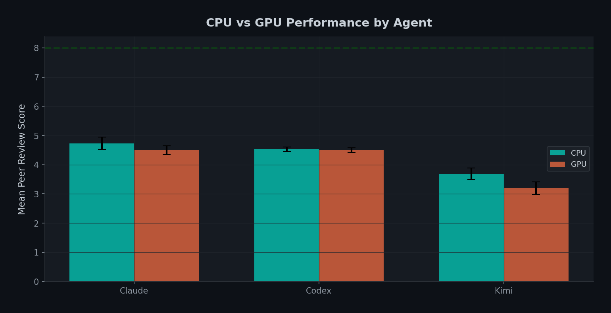
| Peer Review (PR) | Stanford (SAR) | |||||
|---|---|---|---|---|---|---|
| Agent | CPU | GPU | Gap | CPU | GPU | Gap |
| Claude Code | 4.73 | 4.50 | +0.23 | 5.49 | 5.42 | +0.07 |
| Codex | 4.53 | 4.50 | +0.03 | 4.55 | 5.16 | −0.61 |
| Kimi Code | 3.69 | 3.19 | +0.50 | 4.12 | 4.32 | −0.20 |
Per-Domain Scores (GPU)
| Domain | Claude | Codex | Kimi |
|---|---|---|---|
| AI for Biology | 4.44 | 4.67 | 4.33 |
| Computer Vision | 5.11 | 4.67 | 3.67 |
| Datasets & Benchmarks | 4.89 | 4.33 | 2.67 |
| Generative Models | 4.89 | 4.33 | 2.67 |
| Interpretability | 4.44 | 4.67 | 3.67 |
| NLP | 4.67 | 4.67 | 3.00 |
| Privacy in ML | 3.78 | 4.33 | 4.00 |
| Supervised Repr. Learning | 3.78 | 5.00 | 2.67 |
| GPU Average | 4.50 | 4.50 | 3.19 |
Per-Domain Scores (CPU)
| Domain | Claude | Codex | Kimi |
|---|---|---|---|
| Causal Learning | 4.33 | 4.67 | 3.56 |
| Compiler Optimization | 4.89 | 4.22 | 2.89 |
| Data Integration & Cleaning | 4.67 | 4.44 | 3.78 |
| Operating System Design | 4.44 | 4.67 | 4.00 |
| Probabilistic Methods | 5.33 | 4.67 | 4.22 |
| CPU Average | 4.73 | 4.53 | 3.69 |
Score Heatmap (Seed × Trial)

Per-Dimension Comparison

| Dimension | Claude | Codex | Kimi |
|---|---|---|---|
| Novelty | 5.42 | 4.50 | 4.36 |
| Soundness | 5.38 | 6.19 | 3.86 |
| Significance | 5.23 | 4.32 | 4.16 |
| Clarity | 7.16 | 7.47 | 6.33 |
| Reproducibility | 6.42 | 7.65 | 5.07 |
| Experimental Rigor | 5.19 | 5.56 | 3.29 |
| References | 6.44 | 7.01 | 5.70 |
| Reference Integrity | 7.34 | 8.41 | 6.26 |
| Results Integrity | 5.59 | 7.94 | 4.12 |
6. Time Analysis


7. Experiment Analysis
Planned vs Completed Experiments
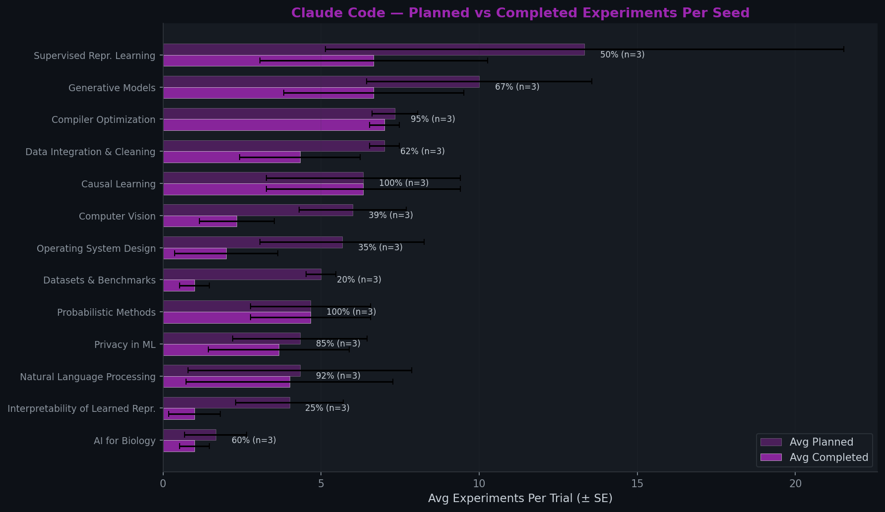
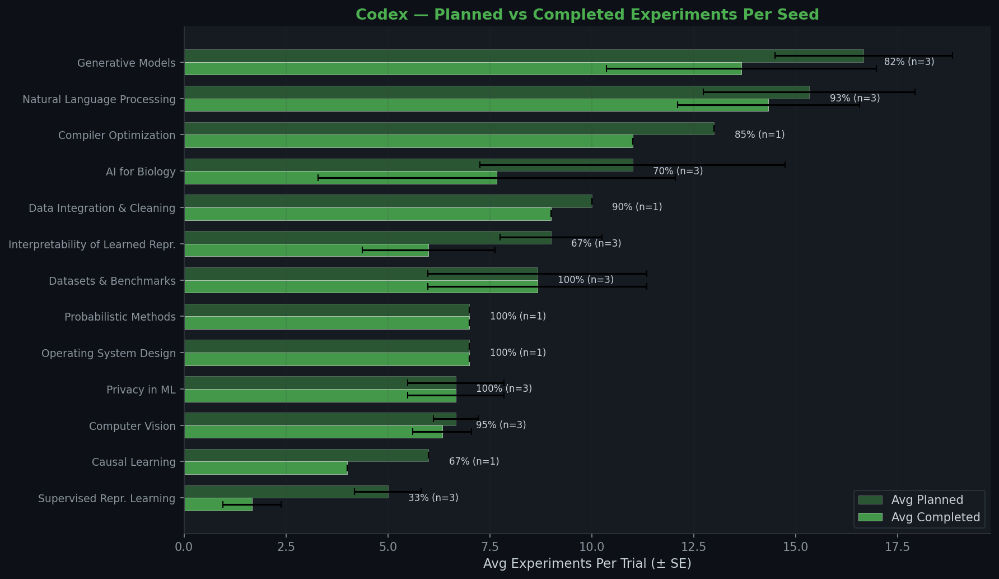
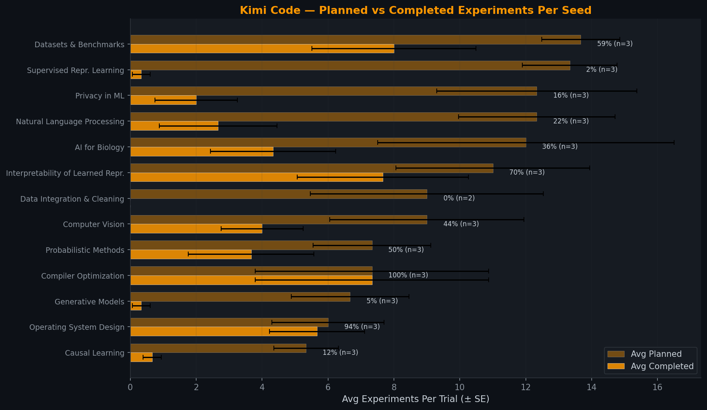
Success Criteria Achievement
Some papers define explicit success criteria in their experiment outputs. Do agents meet the goals they set for themselves?
| Agent | Papers w/ Criteria | Avg Criteria | Pass Rate | All Passed |
|---|---|---|---|---|
| Claude | 7 | 6.0 | 56% | 14% |
| Codex | 8 | 4.1 | 34% | 0% |
| Kimi | 11 | 4.2 | 24% | 9% |
Common Failure Categories
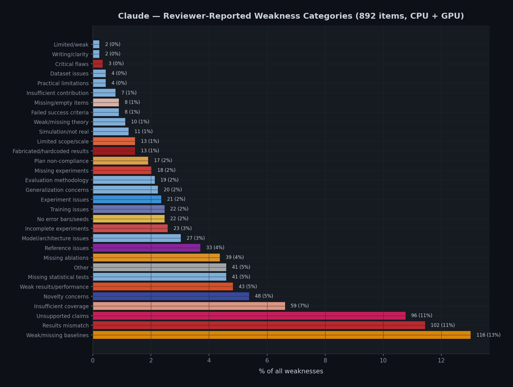
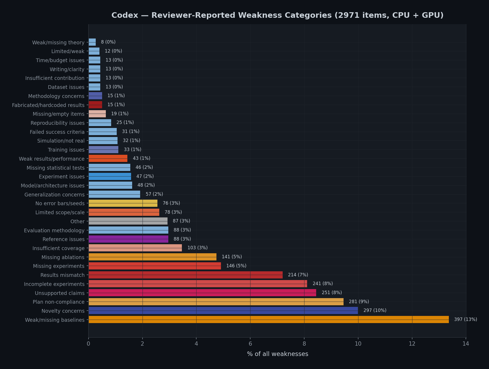
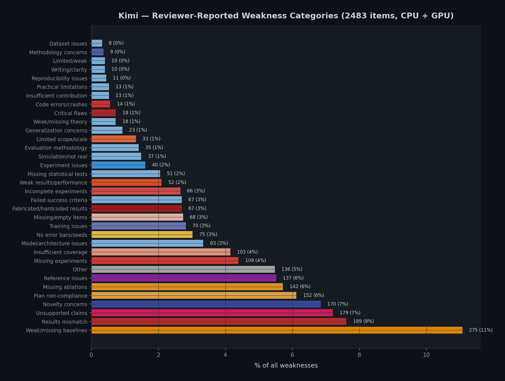
Programming Language Usage


7b. What Goes Wrong? Error Taxonomy
We mined 2,794 weaknesses from 216 peer reviews to build an error taxonomy. What types of problems does each agent produce?
| Weakness Category | Claude | Codex | Kimi |
|---|---|---|---|
| Results fabrication / mismatch | 13.1% | 4.2% | 13.9% |
| Overclaiming | 5.7% | 2.5% | 9.6% |
| Limited scope / scale | 4.8% | 16.6% | 4.4% |
| Missing baselines | 5.1% | 5.5% | 6.9% |
| Statistical rigor | 7.6% | 8.2% | 5.9% |
| Novelty concerns | 3.5% | 5.9% | 2.9% |
| Negative / weak results | 3.5% | 6.1% | 1.2% |
| Missing ablations | 2.8% | 2.7% | 3.8% |
| Code / implementation issues | 1.2% | 0.2% | 1.6% |
What Separates Good from Bad Papers?
Top weaknesses in high-scoring (≥5) vs low-scoring (<4) papers:
| Rank | High-Scoring Papers (≥5) | Low-Scoring Papers (<4) |
|---|---|---|
| 1 | Statistical rigor (26) | Overclaiming (67) |
| 2 | Overclaiming (26) | Results fabrication (65) |
| 3 | Limited scope (20) | Statistical rigor (56) |
| 4 | Missing baselines (18) | Missing baselines (43) |
| 5 | Missing ablations (10) | Missing ablations (29) |
8. Self-Review Analysis
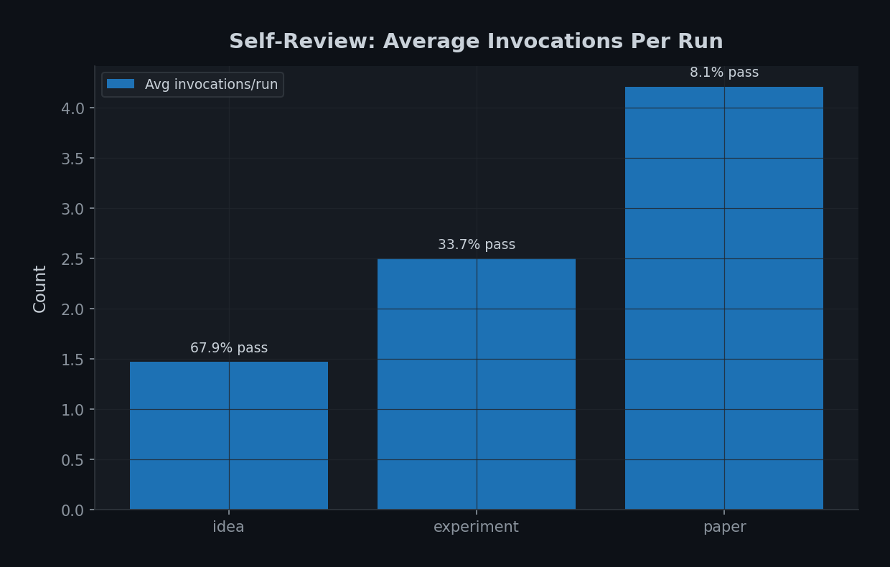
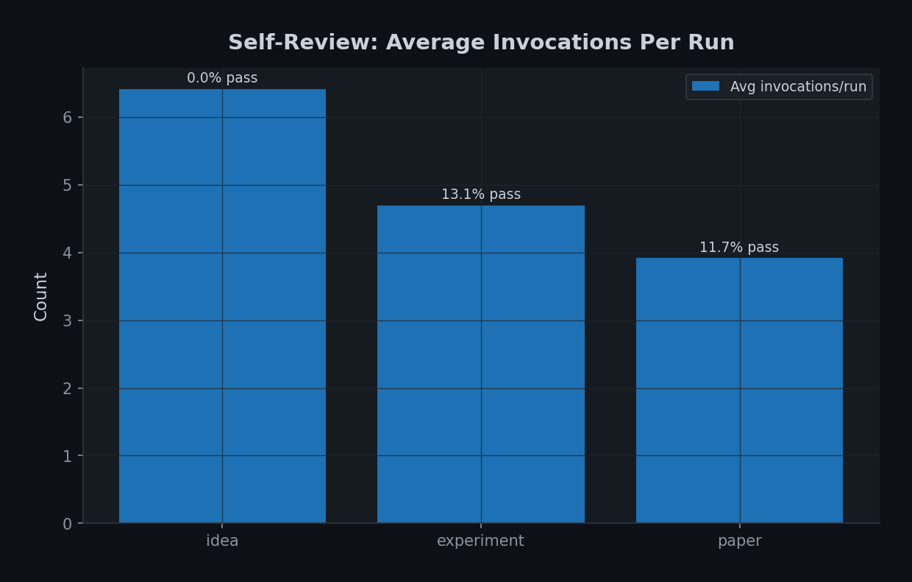
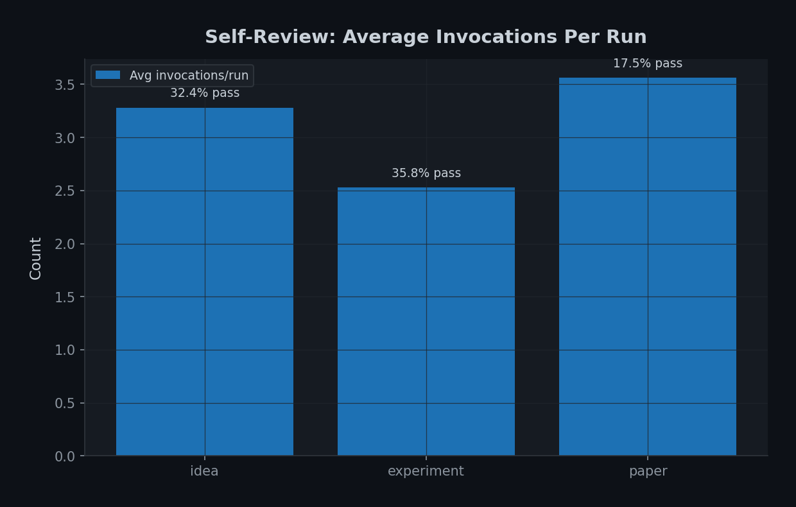
Self-Review Gate Dynamics
Each paper passes through 3 self-review gates. How do the agents perform at each gate?
| Gate | Metric | Claude | Codex | Kimi |
|---|---|---|---|---|
| Idea (threshold: 8) |
Pass on 1st attempt | 63% | 0% | 15% |
| Avg attempts | 1.5 | 6.0 | 3.4 | |
| Mean score | 7.3 | 5.3 | 6.2 | |
| Experiment (threshold: 6) |
Pass on 1st attempt | 32% | 0% | 33% |
| Avg attempts | 2.5 | 4.5 | 2.6 | |
| Mean score | 4.4 | 3.6 | 4.5 | |
| Paper (threshold: 8) |
Pass on 1st attempt | 8% | 12% | 21% |
| Avg attempts | 4.2 | 3.8 | 3.6 | |
| Mean score | 5.2 | 5.7 | 5.9 |
Does Self-Review Revision Actually Help?
When an agent revises after a low self-review score, does the score actually improve?
| Agent / Gate | Improved | Same | Declined | Avg Delta |
|---|---|---|---|---|
| Claude / Idea | 100% | 0% | 0% | +2.1 |
| Claude / Experiment | 88% | 8% | 4% | +2.2 |
| Claude / Paper | 43% | 34% | 23% | +0.0 |
| Codex / Idea | 35% | 51% | 15% | +0.4 |
| Codex / Experiment | 78% | 20% | 2% | +2.0 |
| Codex / Paper | 64% | 29% | 7% | +1.5 |
| Kimi / Idea | 100% | 0% | 0% | +3.0 |
| Kimi / Experiment | 91% | 9% | 0% | +2.2 |
| Kimi / Paper | 61% | 34% | 5% | +1.6 |
Self-Review vs Peer Review Correlation
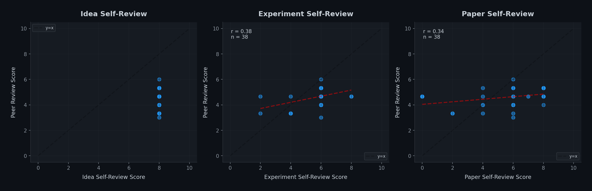
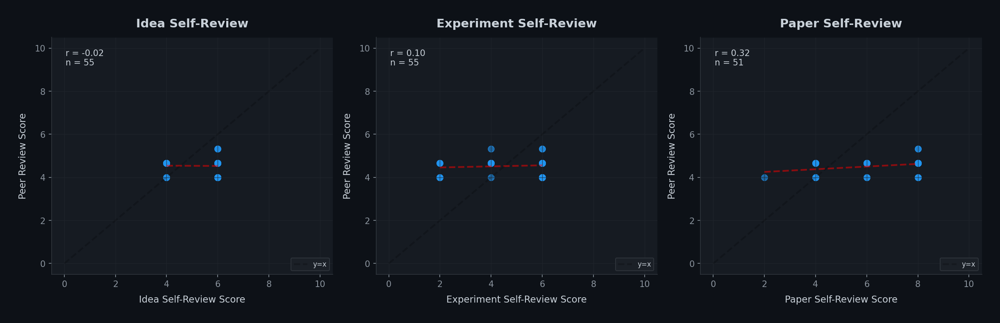
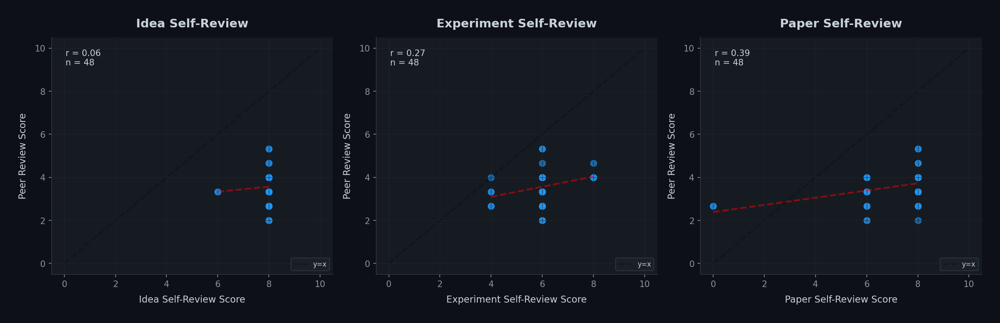
9. Reviewer Performance

Reviewer Bias Matrix
Mean score each reviewer gives to each agent's papers:
| Reviewer ↓ / Agent → | Claude | Codex | Kimi | Avg Given |
|---|---|---|---|---|
| Claude Code | 4.6 | 4.0 | 3.3 | 4.0 |
| Codex | 2.9 | 3.9 | 2.0 | 2.9 |
| Kimi Code | 6.2 | 5.7 | 5.0 | 5.6 |
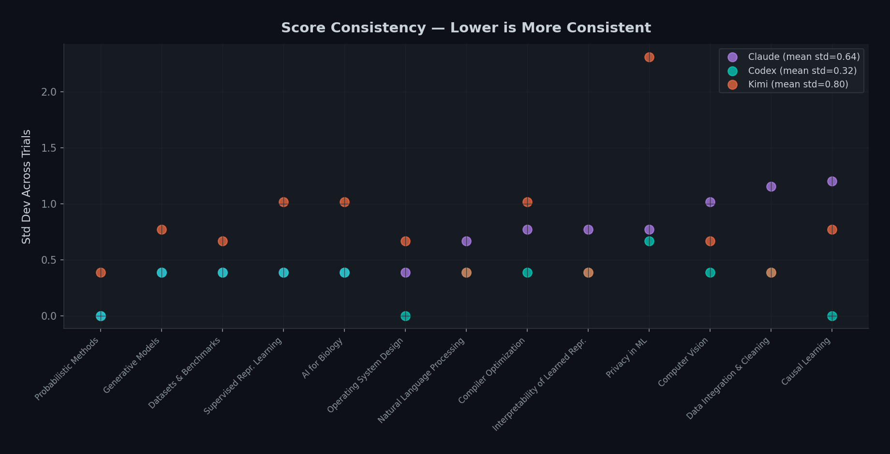
10. Research Style Analysis
Title Structure Analysis
| Metric | Claude | Codex | Kimi |
|---|---|---|---|
| Avg title length | 102 chars | 100 chars | 92 chars |
| Question titles | 10% | 25% | 0% |
| Colon structure (Name: Subtitle) | 74% | 47% | 82% |
| Contains acronym (2+ caps) | 13% | 38% | 45% |
| Named method (starts with name) | 21% | 35% | 49% |
| Hypothesis / question framing | 21% | 33% | 25% |
Title Vocabulary
The most frequent words in each agent's titles reveal distinct research personas:
| Agent | Top Keywords | Personality |
|---|---|---|
| Claude | learning when causal adaptive pipelines contrastive |
Method-oriented with occasional hypothesis framing |
| Codex | study benchmark negative matched controlled pilot |
Empirical scientist — controlled studies, frequent negative results |
| Kimi | adaptive aware guided dynamic gradient contrastive |
System builder — named frameworks with adaptive/aware components |
Title Patterns
Each agent has a distinct title style:
| Agent | Style | Example Titles |
|---|---|---|
| Codex | Question-based, hypothesis-testing. 25% use question marks — no other agent does this. |
"Do Shared Decoders Improve Prototype-Edit Reusability?" "When Does Clarification Supervision Transfer to Formal Reasoning?" "How Much Signal Is in Early Training Trajectories?" |
| Claude | Descriptive and analytical. Lowest acronym rate (13%). Unique "The X of Y" essayistic framing. |
"The Algebra of Compiler Passes: An Empirical Study of Idempotency" "The Bandwidth Knapsack: Optimal Migration Scheduling" "When Does Coarse-to-Fine Training Help?" |
| Kimi | Acronym-heavy named frameworks. Zero question titles — always declarative. |
"CAGER: Causal Geometric Explanation Recovery" "DU-VPT: Decomposed Uncertainty-Guided Visual Prompt Tuning" "VAST: Velocity-Adaptive Spatially-varying Timesteps" |
Research Type Distribution
| Type | Claude | Codex | Kimi |
|---|---|---|---|
| Novel frameworks | 0% | 4% | 42% |
| Incremental improvements | 64% | 13% | 46% |
| Empirical / benchmark studies | 18% | 83% | 0% |
| Negative results | 18% | ~35% | 12% |
Method & Paper Structure
How do the papers differ in structure and technical depth?
| Metric | Claude | Codex | Kimi |
|---|---|---|---|
| Paper length (words) | 3,820 | 3,316 | 2,364 |
| Method section (words) | 638 | 569 | 450 |
| Method % of paper | 17.0% | 17.3% | 18.8% |
| Display equations | 3.8 | 2.5 | 4.1 |
| Math density (per 1K words) | 49.9 | 32.8 | 30.4 |
| Algorithm blocks | 0.6 | 0.0 | 0.6 |
| Figures | 4.7 | 3.9 | 0.8 |
| Tables | 6.0 | 4.2 | 3.8 |
| Theorems / proofs | 0.3 | 0.0 | 0.3 |
| Has loss function | 31% | 33% | 42% |
| Has complexity analysis | 67% | 9% | 58% |
Reference Analysis
| Metric | Claude | Codex | Kimi |
|---|---|---|---|
| Mean refs per paper | 15.2 | 13.3 | 11.5 |
| Median refs per paper | 15 | 13 | 12 |
| Papers with <10 refs | 8% | 5% | 31% |
| Reference integrity score | 7.34 | 8.41 | 6.26 |
Citation Recency
What years do the agents cite? This reveals whether they're aware of recent work or padding with classics.
| Period | Claude | Codex | Kimi |
|---|---|---|---|
| 2023–2025 (recent) | 53% | 65% | 53% |
| 2020–2022 | 21% | 11% | 24% |
| Before 2020 | 26% | 24% | 23% |
| Median citation year | 2023 | 2024 | 2023 |
| Cites "2026" (fabricated) | 23% | 11% | 20% |
Top Cited Venues
| Agent | Top Venues (by frequency) |
|---|---|
| Claude | arXiv (103), ICLR (35), NeurIPS (25), ICML (19), ACL (14), Science (13) |
| Codex | arXiv (196), CVPR (8), ACL (8), ICCV (4), UAI (4), ICML (2) |
| Kimi | arXiv (262), ICLR (44), NeurIPS (38), ICML (23), Nature (23), CVPR (14) |
Seed Difficulty
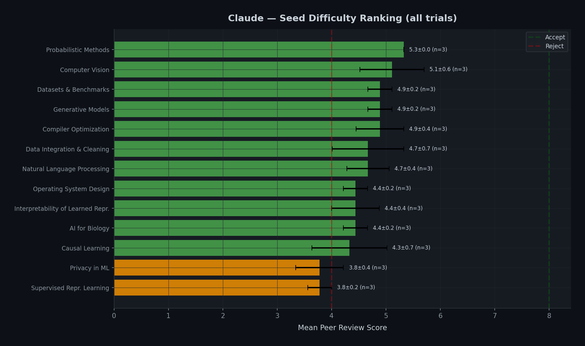
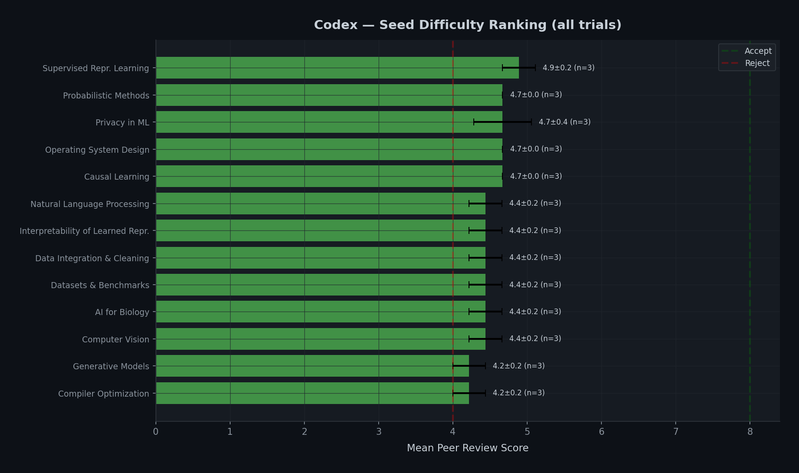
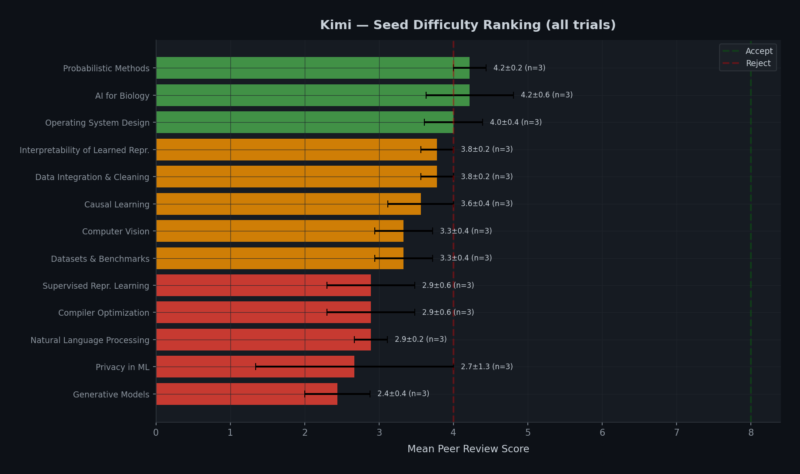
11. Conclusions
Key Takeaways
- Claude ≈ Codex >> Kimi — Claude Code (4.59) and Codex (4.51) are statistically comparable; Kimi (3.38) significantly trails.
- Reliability vs Novelty trade-off — Codex produces reliable, reproducible research (results integrity: 7.94). Claude takes bigger risks and scores higher on novelty (5.42) but sometimes fabricates results (integrity: 5.59).
- No agent passes peer review — The highest score is 6.0 (one Claude paper). No paper reaches the 8.0 accept threshold.
- Results fabrication is the #1 killer — 14% of Claude and Kimi weaknesses are fabricated/mismatched results. Codex avoids this (4%) by running controlled, narrow experiments.
- Self-review works for ideas and experiments, fails for papers — Idea revision succeeds 100% of the time. Paper revision has 0.0 average improvement for Claude — agents waste cycles rewriting without improving.
- Agents fail their own goals — Even the best agent (Claude) only meets 56% of self-defined success criteria. Codex meets 34%, Kimi 24%.
- Reviewer bias is real — Kimi gives 2–3× higher scores than Codex on the same papers. Multi-reviewer setups are essential.
- Three distinct research personas — Codex = cautious empiricist (questions, negative results, highest integrity). Claude = analytical essayist (longest papers, most math, most figures). Kimi = system builder (acronyms, shortest papers, most loss functions).
- More time ≠ better results — Claude spends 3.3× longer than Kimi but the quality gap doesn't justify the cost.
- Agent research matches human-level on external review — Claude Code (5.45) scores above the weighted average of 300 real ICLR 2025 papers (5.42, weighted by official 32% acceptance rate), between accepted (5.59) and rejected (5.34). It outperforms FARS (5.06, p=0.0002) despite a 930x lower budget ($200 vs $186K). Internal and external reviews agree on agent ranking but show weak per-paper correlation (r≈0.2).
What's Still Missing
- Human expert evaluation of paper quality (AI reviewers may miss different things than domain experts)
- H100/multi-GPU experiments (higher compute may unlock different research strategies)
- Cross-agent collaboration (can agents improve each other's work?)
- Longitudinal studies (do agents improve with newer model versions?)
References
- Andrej Karpathy. "Auto Research." 2025. github.com/karpathy/autoresearch
- Chris Lu, Cong Lu, Robert Tjarko Lange, Jakob Foerster, Jeff Clune, and David Ha. "The AI Scientist: Towards Fully Automated Open-Ended Scientific Discovery." arXiv:2408.06292, 2024.
- Analemma Intelligence. "Introducing FARS: Fully Automated Research System." 2025. analemma.ai/blog/introducing-fars
- Anthropic. "Claude Opus 4.6." 2026. anthropic.com/news/claude-opus-4-6
- Anthropic. "Claude Code." code.claude.com
- OpenAI. "Introducing GPT-5.4." 2026. openai.com/index/introducing-gpt-5-4
- OpenAI. "Codex." openai.com/codex
- Moonshot AI. "Kimi K2.5." kimi.com/ai-models/kimi-k2-5
- Moonshot AI. "Kimi Code." kimi.com/code
- Stanford ML Group. "Stanford Agentic Reviewer." paperreview.ai